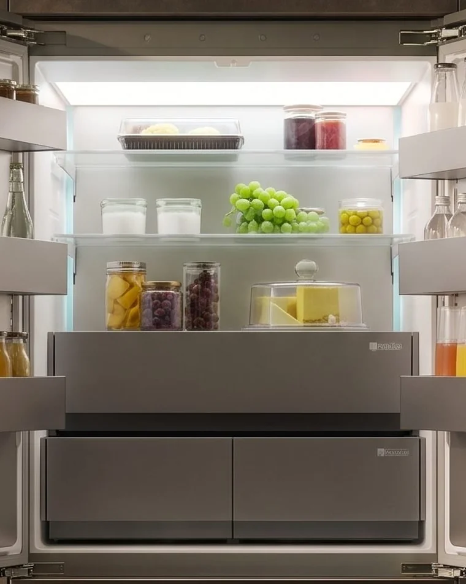
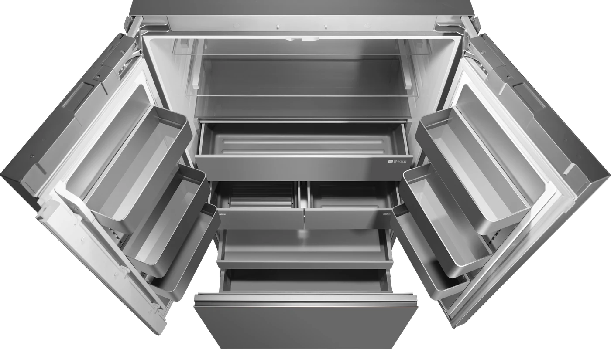
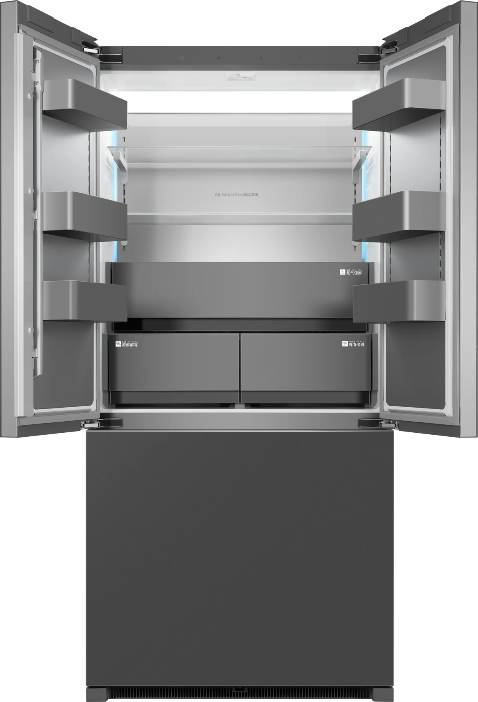
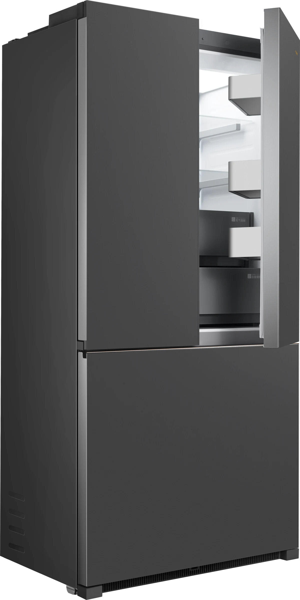
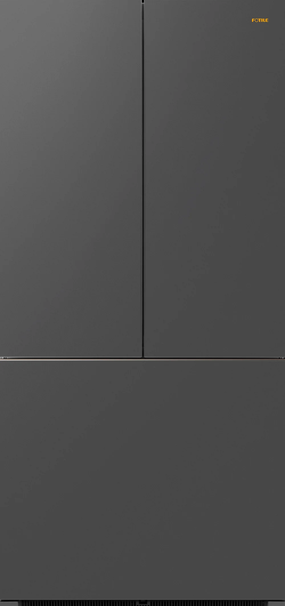

A 508-litre built-in refrigerator with five temperature zones, a nitrogen-rich fruit and vegetable drawer, a thaw-to-freeze compartment and plasma deodorising — at a whisper of 36 dB(A). Here is how it works.
Cold air circulates through the refrigerator, so temperatures differ from one area to the next. The F20 turns that into a feature: five areas, each set up for what you store there. Tap one.
Set the refrigerator between 2 and 8 °C and the freezer between −15 and −24 °C. One press starts Quick Cool or Quick Freeze, and the screen locks itself after two minutes. This is a working model of the controls.
Switches itself off after 6 hours.
Switches itself off after 52 hours.
Hold the lock icon for 1.5 seconds to unlock.
The refrigerator and freezer start at these settings.
Interactive model of the controls described in the F20 user manual. The real panel is touch-operated.
One variable-temperature compartment, three modes. It starts in Soft freeze, and Defrost runs a 4-hour countdown before returning to Soft freeze on its own.
For defrosting meat and seafood. Runs for 4 hours, then switches to Soft freeze automatically.
Stays below 0 °C for short-term storage of meat and seafood. Not for vegetables, fruit or eggs. This is the default.
Stays above 0 °C — suited to beverages, bottled foods and similar items.
Illustrations show the idea, not measured temperature curves.

The Air Control drawer builds up a high concentration of nitrogen to extend how long fruit and vegetables keep. In the main compartment, Air-Circle Pro uses plasma technology to remove odours and bacteria.
*Rates are from the F20 user manual: odour figure measured with instant deodorisation active; sterilisation with Air-Circle Pro active in the refrigerator compartment.
The F20 needs no side clearance, but the cabinet opening must be at least 900 × 580 × 1915 mm for the 894 × 575 × 1910 mm fridge. Enter your measurements.
Cabinet side panels must be vertical within 1 mm. Adjustable feet give about 10 mm of levelling; hinge shims level the doors.




| Model | H508W-F20 |
| Total volume | 508 L |
| Refrigerator · freezer · variable | 320 L · 170 L · 18 L |
| Sound level | 36 dB(A) |
| External dimensions (W × D × H) | 894 × 575 × 1910 mm |
| Net weight | 161 kg |
| Climate class | SN, N, ST, T |
| Power | 220–240 V ~ 50 Hz · 1.4 A |
| Supply voltage range | 187–264 V (use a stabiliser outside this range) |
| Refrigerant | R600a, 65 g |
| Installation | Built in · cabinet opening min. 900 × 580 × 1915 mm |
First switch-on: leave the freezer door shut for 30 minutes and allow roughly 2–3 hours before loading food (longer in hot summer weather). Parameters may change with continuous improvement; refer to the nameplate.
The engineering above isn't a one-off. It comes from a company that spends its whole life on the kitchen.
Company data from Fotile's brochure, as of October 2025.
Add it to your quote basket and a Fotile specialist will confirm availability, price and installation for your kitchen.